HASK workshop · Updated November 12, 2026
Red Hill Tin lid engraving, from first test to batch jig
Packaging tests for a small-batch pine salve. I adapted engraved chapel and verse artwork to the face of a 2 in reflective tin lid, tested it on the laser, mapped how power and speed change the mark, and designed a jig for running lids in batches. It's also a worked example of how HASK takes an idea into development.
- Material
- Reflective tin, 2 in lid
- Artwork
- 45.72 mm (1.8 in) face
- Machine
- Tronxy Ultrabot U20 diode laser
- Software
- Laser Photo Studio, my own
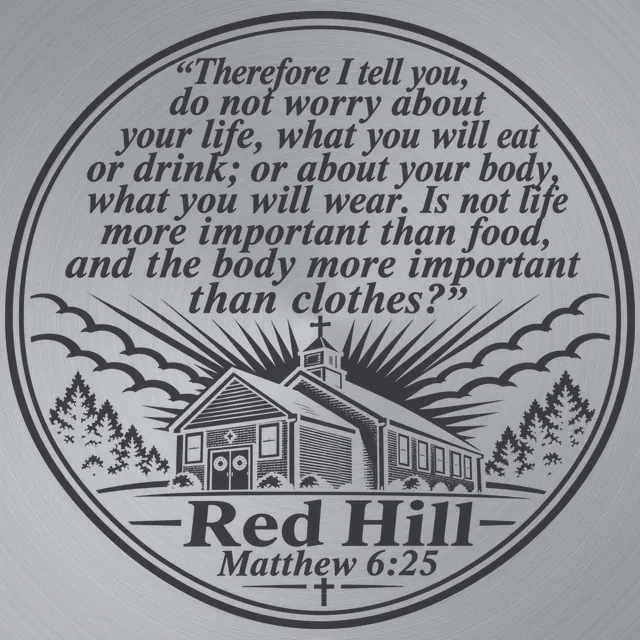
The lid artwork on a drawn tin. Not a photo of a finished lid.
The process
Six days, seven stages
Each stage answered one question before the next started. Small lettering turned out to be the hard part, so most of the work went into finding out why.
- 1
Artwork
Nov 7–8Chapel and verse art redrawn for a 45.72 mm face.
- 2
First lids
Nov 8Chapel lids: big shapes read, fine type is patchy.
- 3
Full-verse lid
Nov 8–9Two passes on one lid. The best test so far.
- 4
Software check
Nov 9Jobs checked against their commands. 77 offline tests.
- 5
Power and speed ladder
Nov 10165 patches map which exposure gives which tone.
- 6
Batch jig
Nov 1042-pocket tray designed. Not printed yet.
- 7
Two-tone lids
Nov 11–12The gold held. The fast-pass dark wiped off as soot.
- →
Next
PlannedA permanent dark tone, wiped-lid photos, one-direction scan.
Behind the seven stages
The working checklist
The timeline is the short version. The project runs on a checklist where every item carries a status, and an item never claims more than its evidence shows. Client and business items are kept off this page.
- Done run on the machine or completed, with a record
- Prepared file made and checked offline, not yet run
- Planned next, not started
18 done · 4 prepared · 15 planned
Design and artwork
- Chapel and full-verse art redrawn for a 45.72 mm (1.8 in) face
- Dark- and light-lettering versions proofed for reflective tin
- Woodcut card art prepared for black aluminum
- Pick dark, mid and light tones from the ladder for a three-tone design
Test engraving
- First chapel lid, one pass
- Second chapel lid, two passes plus masked detail runs
- Deliberate disconnect mid-job to test recovery
- Dense badge design in threshold mode
- Full-verse lid: grayscale pass, then a Floyd–Steinberg pass
- Business cards engraved on black anodized aluminum
- First two-tone lid: Matthew 6:25, a copper pass plus a fast pass
- Forest Products lid, gold first; wiping showed the fast-pass dark is soot
- Find a permanent dark: slower speed, repeat passes, finer rows or wiping between passes
- Photograph every lid after wiping, and say which photos are before
- One-direction scan on a fresh lid
- Three-tone version on a fresh lid
- First test on a black tin finish
Measurement and records
- Settings, run time and photos logged for every run
- Saved jobs checked against the commands they generated
- 165-patch ladder: first run and finishing job complete
- Wipe and photograph the ladder lid, then fill in its results sheet
- Confirm both ladder jobs used the same lid and zero point
- Measure the tins with calipers: base, widest diameter, height, lip
Software: Laser Photo Studio
- Optional left-to-right-only scan
- Saved setup and position recovery
- Inspection park and return-to-zero
- 77 offline tests passed
- Ladder generator built, in review before merging
- Tidy job folders and photo filing
Production tooling
- 42-pocket jig designed and split into printer-sized tiles
- Mesh checks passed offline
- Three-pocket fit coupon ready to print
- Measure the laser bed plate
- Print the coupon; set pocket clearance from real tins
- Only then print the full jig
Machine and housekeeping
- Laser head and air-assist maintenance check
- Back up the project files with version history
Settings and results
Every run, in order
The runs through Nov 10 used 0.10 mm rows on the diode laser. Results are judged by eye from the photos, not measured.
| Run | Date | Power and speed | Mode and time | What it showed |
|---|---|---|---|---|
| First chapel lid | Nov 8 | 65% · 2,500 mm/min | One pass, about 8 min | Church and trees read. Sign, rim and small lettering weak. |
| Second chapel lid | Nov 8 | 60% · 2,000, then 1,900 mm/min | Two full passes, then detail runs | Big shapes and rim took. Small lettering stayed patchy. |
| Detail runs | Nov 8 | 55–60% · 1,700–1,750; title 80% · 1,700–2,000 | Masked touch-ups, one deliberate recovery test | Large title reads. The finest lines do not. |
| Dense badge design | Nov 8 | 80% · 1,600 mm/min | Threshold, 11 min 27 s | Title readable. Smallest lines and dense detail merge. |
| Full verse, pass 1 | Nov 8 | 65% · 600 mm/min | Grayscale, about 29 min | Chapel and rays clear. Verse strokes uneven. |
| Full verse, pass 2 | Nov 9 | 65% · 450 mm/min | Floyd–Steinberg over pass 1, about 38 min | Better illustration detail. Best test lid so far; letters still a little short. |
| Power and speed ladder | Nov 10 | 50–100% · 50–6,000 mm/min | 165 patches, one pass each; finishing job 39.6 min | A full tone map. Did not burn through the lid. |
| Two-tone Matthew 6:25 | Nov 11 | 80% · 140 mm/min (copper); 80% · 3,000 mm/min (fast pass) | Two passes, one per tone | "Red Hill" and the reference read clearly. Small verse lettering broken. Not yet checked after wiping. |
| Two-tone Forest Products | Nov 12 | 80% · 140 mm/min (gold); 80% · 2,200 mm/min (fast pass) | Gold first, about 80 min; then the fast pass, about 15 min | The gold stayed after wiping. The fast pass's dark grey was soot; under it is a light frosted etch. |
From the field · filmed by the Red Hill founder
Where the salve starts
Before any tin reaches the laser, the salve begins in the woods. The Red Hill founder taps pine trees for their resin, then melts, strains and pours it into tins by hand. These are his clips, shown with his permission. Formulas and quantities stay private.
Field footage: the Red Hill founder. Edited for the web, with the sound removed.
Stage 1
The artwork
The designs are drawn in a woodcut style: black linework with hatching, pines and a chapel. Each lid design was redrawn for a 45.72 mm (1.8 in) round so it stays on the flat face of a 2 in lid, then prepared for the laser in Laser Photo Studio. The business card designs are shown with the finished cards below.

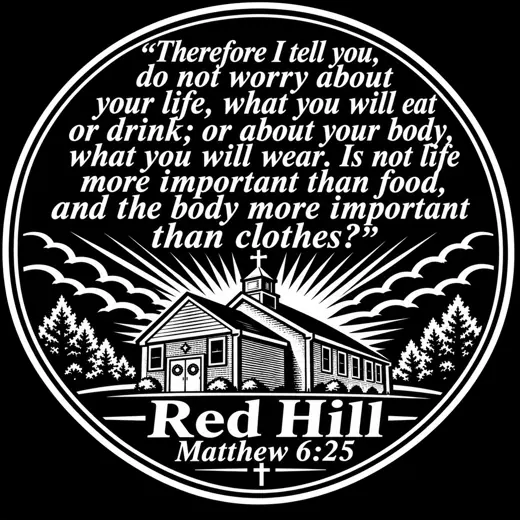
Stage 2
First lids: the chapel
The chapel design was the first artwork on tin. The church, trees and rim came through from the first lid. The small lines of lettering under the title did not, and more passes made them patchier, not sharper. That set the question for the rest of the project: how small can type get on this lid?

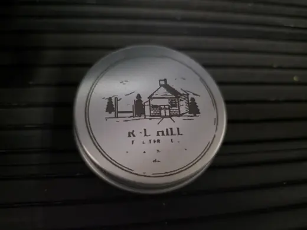

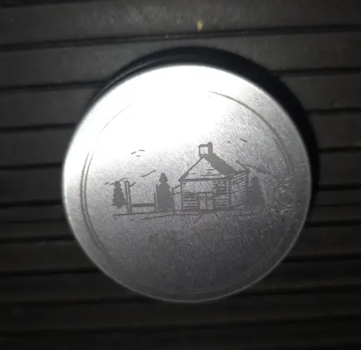

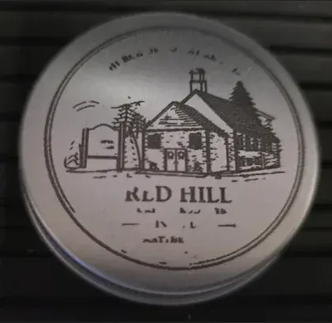

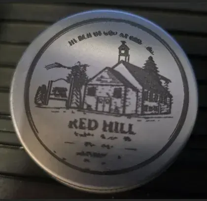
Stage 3
The full-verse lid
The Matthew 6:25 design puts the whole verse above the chapel. Pass 1 was a slow grayscale run. Pass 2 went over it with Floyd–Steinberg dithering, slower again.
Right after pass 2, I thought the lettering looked worse. In daylight the next morning, I judged it the best test lid so far, with the letters still a little short of where I want them.
Why pass 2 didn't sharpen the letters: every mark it made landed on a spot pass 1 had already marked, and the slower speed re-exposed some letter edges. A fair comparison needs a fresh, matching lid.

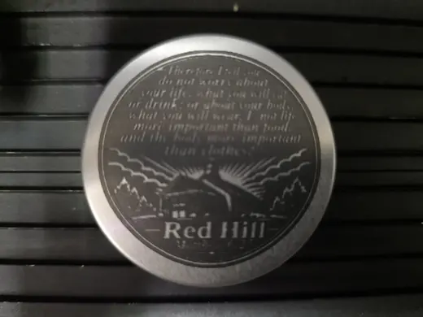


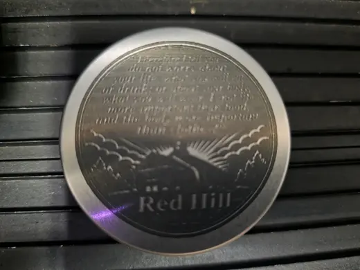

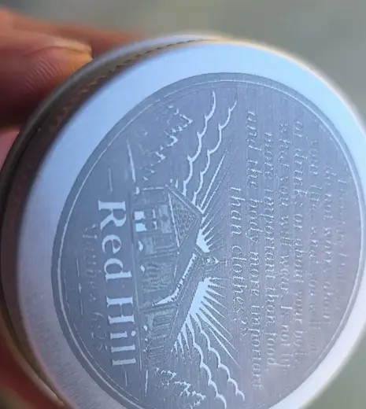
Stage 4
Checking the software
Before blaming the machine, I checked my own software. I compared every saved job against the commands it generated: no missing samples, no power or direction mismatches. The rough letters weren't a software fault. Spot width and how the laser handles very short marks are still unmeasured.
Added to Laser Photo Studio
- Optional left-to-right-only scan, for a direction comparison
- Saved setup and position recovery
- A park-left inspection move and return-to-zero
- The one-direction scan is ready for a fresh-lid comparison. It hasn't been run on a lid yet.
Stage 5
Mapping power and speed
To stop guessing, I burned a ladder: 165 squares of 2 mm on one lid, 11 power levels (50 to 100% in 5% steps) against 15 speeds (50 to 6,000 mm/min). I ran it fastest first and stopped partway to protect the lid, then finished the last 33 squares, the slowest ones, in a second job.
In the photos, taken before wiping, the hottest corner turned a rosy brass with coppery edges, the middle looked dark grey and the fast end stayed light grey. It never burned through. It's the first map of which exposure gives which tone on this tin. Since then, the dark grey from fast passes has turned out to be soot (Stage 7), so the grey squares need reading again after a wipe.

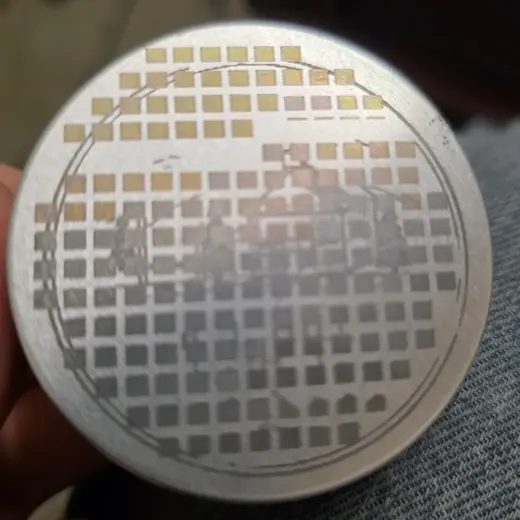

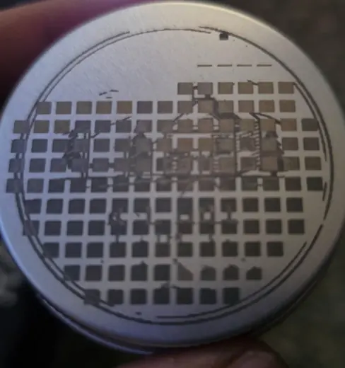

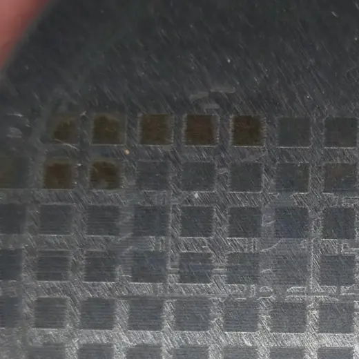

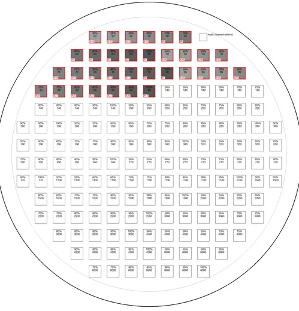
Stage 6
A jig for batches Designed, not yet printed
A single lid can be lined up by eye. A batch can't. The jig is a 6 mm tray with 42 pockets (7 × 6 on 57.15 mm centres), each Ø51.30 mm for a 2 in tin, so every lid sits at a known position. It's split into tiles that fit a 3D printer bed, with a three-pocket fit coupon to print first. Mesh checks passed offline. The tin sizes are nominal, so the coupon has to prove the fit before the full tray is printed.

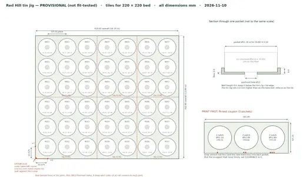

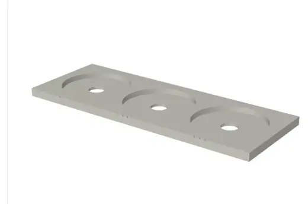
Stage 7 · Latest
Two tones, then a wipe
After the ladder, the next step was to burn two of its tones on purpose, each as its own pass on bare reflective tin: a slow pass for a warm gold or copper tone and a fast pass for what looked like charcoal. The first try, on Nov 11, was the Matthew 6:25 design. On Nov 12 I burned the Red Hill Forest Products design the same way, gold first. That design was developed from an AI-generated mock-up and redrawn for the laser.
Then I wiped the Forest Products lid. The gold stayed. The charcoal didn't: it was soot sitting on the surface, and under it is only a light, frosted etch that still looks like bare metal. So this lid is really gold plus a light etch, and the dark in the earlier photos was misleading.
A true, permanent dark on these lids is still unproven. It will need much slower speeds or more exposure; repeat passes, a finer row pitch and wiping between passes are the next things to test. The soot might even work as a temporary stencil for the gold, but for now that's only an idea. From here on, every lid gets photographed after a wipe.

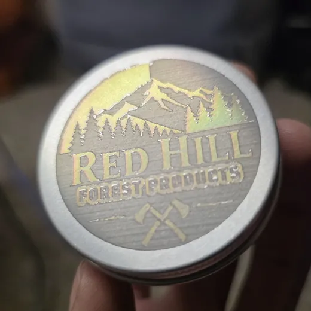

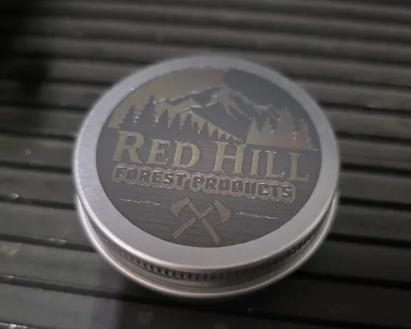

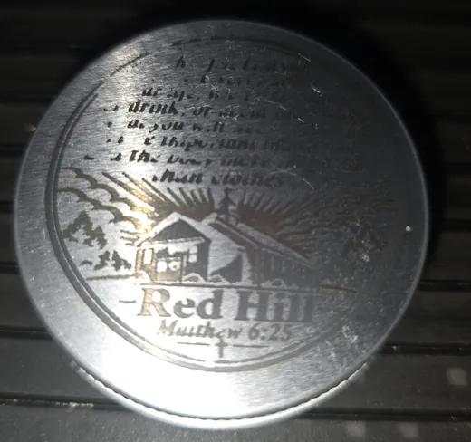
Finished pieces
Business cards on black anodized aluminum
Unlike the lids, these are finished: two Red Hill business card designs, each 4 × 2 in black anodized aluminum. The woodcut art is engraved as light marks on black with Floyd–Steinberg dots at 60% · 2,400 mm/min, in one pass: about 85 minutes for the Forest Products card and about 65 for Leather Care.
Each design is shown as artwork first, then as the engraved card. The fine pine, cone and jar detail holds up well on aluminum. Cards like these are part of the wider laser and CNC work: see more in From the workshop.
Forest Products card: art, then engraved

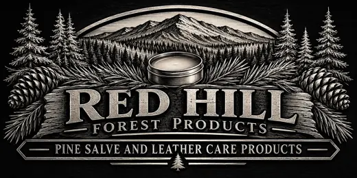

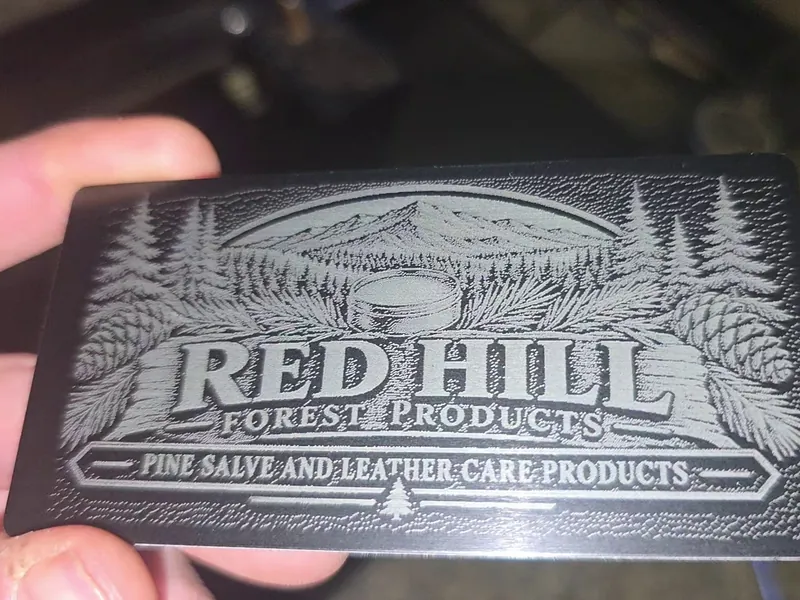
Leather Care card: art, then engraved

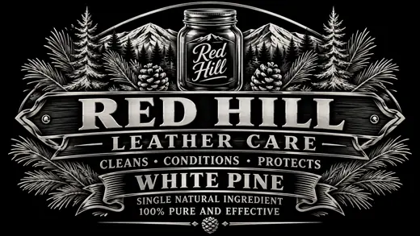

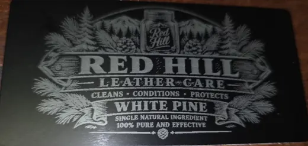
What I learned
Five takeaways

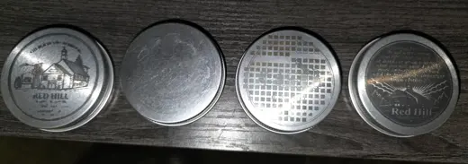
- Type is the limit.Lettering under about 1 mm is what breaks first on this lid.
- Context changes the mark.The same art behaves differently with power, speed, direction and what's already on the lid.
- Map before you tune.A ladder on a fresh lid is how to choose tones, not more passes.
- Batches need fixtures.A jig is what turns a good test into repeatable work.
- Wipe before you judge.The dark from fast passes was soot. A mark only counts once it survives a wipe.
Next
What comes next
The lids above are tests. The finished design and settings come once these steps are done.
- A tighter ladder around the tones I want to use.
- The one-direction scan of the full-verse design on a fresh lid.
- A permanent dark tone: slower speeds, repeat passes, finer rows or wiping between passes.
- A three-tone version, once a dark tone holds.
- Print the fit coupon, then the jig.
Working with HASK
How HASK takes an idea into development
Red Hill Forest Products began as its founder's idea for handmade forest products. HASK's part is the development: engraved tins and cards, testing, software and tooling. The same approach works for any product or business proposal. Each step builds on what the last one proved, and you see the tests, not just the end result.
- Brand and artworkTurn the idea into designs sized for the real part and the real machine.
- Prototype earlyMake physical test pieces quickly to find out what actually works.
- Test and recordLog every run's settings and result so decisions rest on evidence.
- Custom softwareBuild or fix the tools when off-the-shelf ones get in the way.
- Map the processRun structured tests, like the power and speed ladder, before tuning.
- Plan for productionDesign fixtures and workflows so one good piece becomes a repeatable batch.
Engraving, 3D printing, software and design all happen in one place, so an idea can move from sketch to tested sample without being handed between shops.
Credits
Who does what
- Red Hill Forest Products
- The business, its products and its brand.
- The Red Hill founder
- Founding vision, the harvesting and processing work behind the products, and the field footage.
- HASK · Tristan Boyd Hash
- Business development: artwork prepared for engraving, laser testing, Laser Photo Studio software, the batch jig, the business cards and this documentation.
Credits describe contributions only, not ownership.
Earlier notes: progress log through November 8.